✧
✧
PARA ALGUÉM MUITO ESPECIAL
✦
O que amo em você
Um pedaço da nossa história
Se eu pudesse te prometer três coisas
Cada cartão se abre sozinho, no seu tempo.
Com todo o meu carinho,♡
ALGO ESPECIAL ESPERA POR VOCÊS
Respire fundo. Esta mensagem vem de alguém que pensou em você.
Cada palavra foi escolhida com carinho.
PARA ALGUÉM MUITO ESPECIAL
Cada cartão se abre sozinho, no seu tempo.
Algumas palavras acabam. O sentimento, não.
NOSSOS MOMENTOS
UMA ÚLTIMA COISA
Fechado, guardado e esperando o instante certo.
QUANDO A SAUDADE APERTAR
NOSSOS MOMENTOS
O link parece estar incompleto. Peça a quem enviou para compartilhar o link criado depois de finalizar a carta.
Criar uma cartaFELIZ ANIVERSÁRIO

Com todo o meu carinho, sempre. ♡
UM MOMENTO ANTES
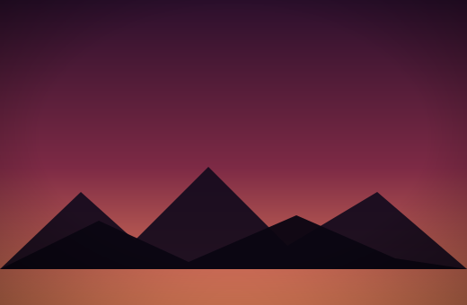
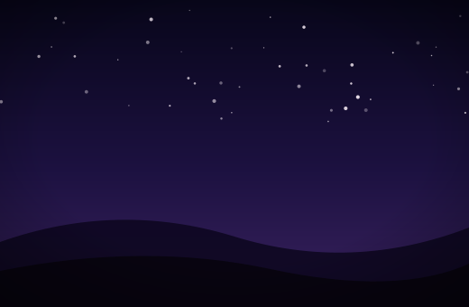
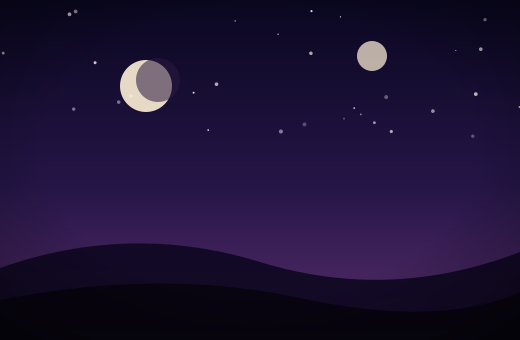
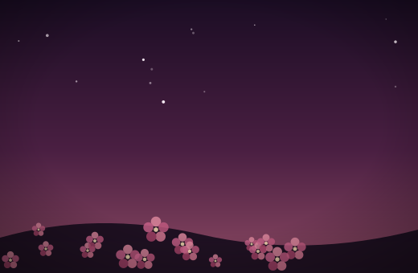
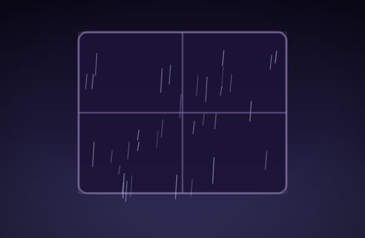
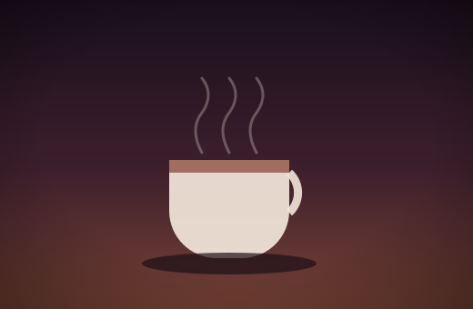
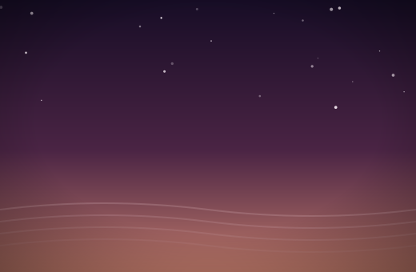
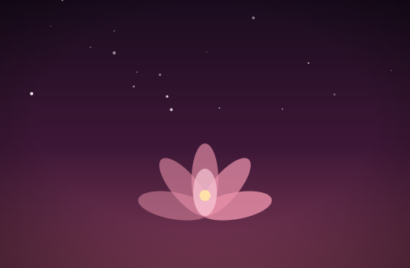
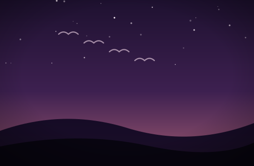
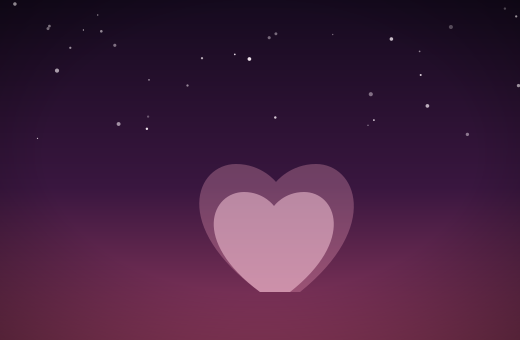
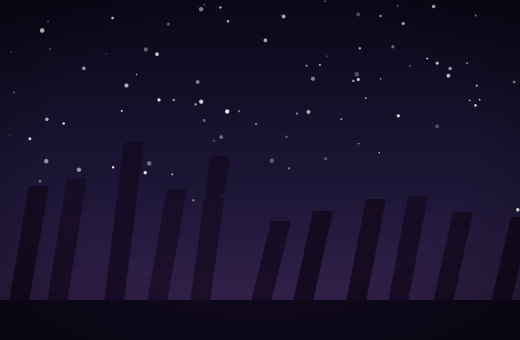